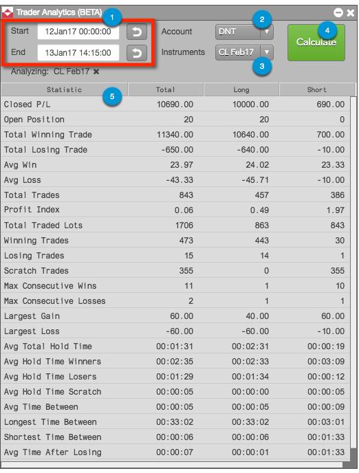

The Trader Analytics display consists of the following:

- Time and Date selectors — Allows you to set a time interval for the calculations.
- Account selector — Allows you to calculate statistics for a single account, multiple accounts, or all accounts.
- Instruments selector — Allows you to calculate statistics for a single instrument, multiple instruments, or all instruments traded using the selected account(s).
- Calculate button — Calculates performance statistics for the selected account(s) and instrument(s).
- Performance Statistics — Rows and columns displaying performance statistics that are used for analyzing trader
performance.